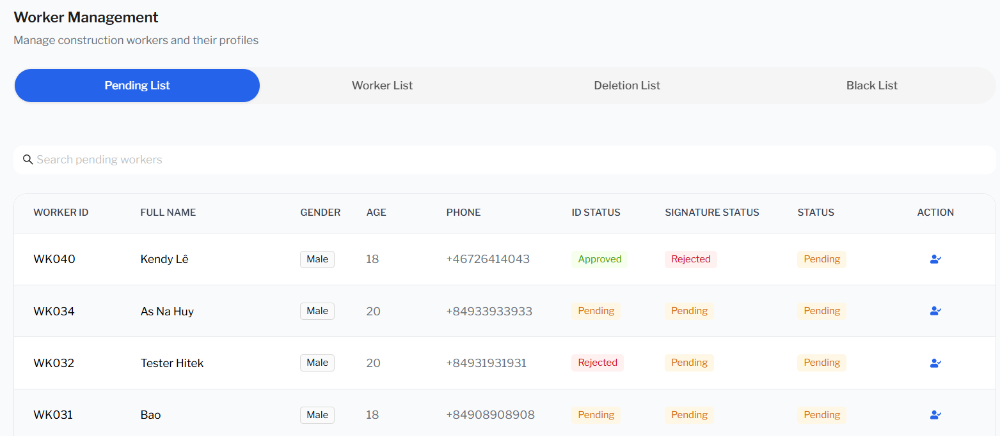
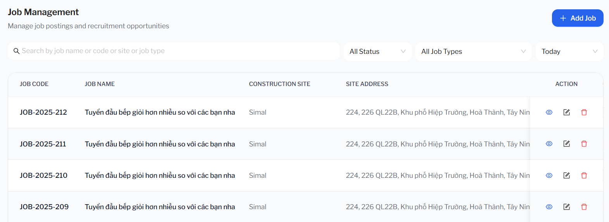

Interview prep · Kinh nghiệm dự án
Ghi chú dự án
Ghi chép về component dùng chung FilterTable trong dự án Hitek — dùng khi phỏng vấn hỏi sâu về thứ bạn đã tự xây dựng.
1 Ghi chú dự án
FilterTable — component dùng chung (dự án Hitek)
FilterTable Common
1. FilterTable có 2 cách dùng (hiển thị) chính:
Cách dùng đặt biệt: Header + SegmentTabs + Table + Modal => gồm 1 thanh tabs và nhiều table vì mỗi table là 1 tab

Cách dùng thông thường:Header + Table + Modal => chỉ có 1 table

2. CUD row trong FilterTable:
- gồm 2 type là Modal và Link (navigate sang page khác)
- Mỗi type gồm 3 actions: Detail, Create, Update
- riêng Delete thì FilterTable dùng Modal.confirm({...})
3. Chi tiết các props của FilterTable
const {
title,
subTitle,
columns,
useQueryHook, // query get data để lấy rows cho table
paramVariables, // query params initial của phục vụ cho filter by criteria , pagination … rows của table
actions = {
isDetail: true,
isEdit: true,
isDelete: true,
customAction: () => null,
}, // use khi muốn có cột action ở cuối gồm 3 button chính: view detail, edit và delete 1 row , bên cạnh đó có thể truyền 1 func hoặc 1 array gồm các func , mỗi func đại diện button custom (dùng customAction), tuy nhiên các button custom này ko connect tới Modal trong FilterTable mà phải dùng Modal riêng bên ngoài
createInfo, // cho phép pass form create + mutation call API create + custom modal create (title, width …)
updateInfo, // cho phép pass form update + mutation call API update + query call API get detail + custom modal update (title, width …)
detailInfo, // cho phép pass query get detail (nếu dùng modal) , dùng link để chuyển sang trang detail hoặc dùng modal để show detail
exportInfo, // cho phép pass text button export + mutation call API export
deleteInfo, // cho phép pass mutation call API delete + custom modal delete (title, width …)
filterRender,// pass ui filter riêng vì ko dùng đến filter có sẵn trong table antd, đơn giản vì filter , pagination … là handle ở BE mà
segmentRender, // pass 1 array các SegmentConfig (interface này extends FilterTableProps + thêm key và label của Tab), chỉ dùng khi muốn có tabs segment + table, đã dùng prop này thì các props liên quan đến CRUD có chữ ‘Info’ ở cuối như createInfo, … ko cần truyền vì FilterTable ưu tiên segmentRender
formatInitialValues, // được dùng để format data detail của 1 row
formatFormValues, // đc dùng để format form values của các form create update trong 1 modal trước khi submit để call API
formatFilterFormValues, // đc dùng để format các query params dùng trong query api get list rows, ví dụ như format lại date , …
forceRerenderParentComponent, // khi detail data của 1 row thay đổi (select row khác) thì sẽ gọi hàm này
} = props;4. Các biến, hàm cần lưu ý trong FilterTable:
- renderHeader: là 1 thẻ Flex theo row gồm title, subTitle bên trái và bên phải có thể gồm 2 nút create or export hoặc ko có nút nào
- renderTable: là 1 thẻ Form chứa Flex theo column gồm 1 filterRender được pass vào và Table custom
- renderModal: là 1 thẻ Modal chứa thẻ Form , sẽ chứa UI 1 Form (được pass từ bên ngoài) về Create, Update, View detail của 1 entity
- segmentConfig: đại diện cho table của tab được active thông qua activeSegment state, bên cạnh đó nó cũng đc xem là 1 FilterTable (có thêm key + label)
- currentUseQueryHook: query call API get list rows
- currentDetailHook: query call API get detail 1 row được selected, phục vụ cho view detail và thực hiện update info row. Priority order: segment.detailInfo -> segment.updateInfo.detailFunc -> detailInfo -> updateInfo.detailFunc
- currentConfig: là 1 obj gồm các fields và value của field sẽ ưu tiên segmentConfig rồi mới đến props của FilterTable
- internalParams: là 1 state quản lý query params ở api get list , phục vụ cho pagination + filter table
- openModal: là 1 state quản lý việc đóng mở 1 Modal , nó gom 4 fields là type, open, id, index. Ví dụ , muốn mở modal Form Create thì set type : ‘create’ , open: true và id: ‘’ , chỉ set id khi mở Modal update hoặc view detail vì 2 loại Modal đó cần call API get detail by id
- getRecordId : lấy id từ record (row) ở table, nhằm phục vụ cho API detail , update dựa vào id
- shouldFetchDetail: dựa vào openModal state nó sẽ là true khi mở modal detail hoặc modal update form. Bên cạnh đó nó đại diện cho enable field của useQuery , nói nôn na là chỉ call API detail khi mở modal. Như bạn biết , enable của useQuery default là true , tức là luôn gọi queryFn khi component chứa useQuery này mounted, do đó cần kiểm soát enable thông qua shouldFetchDetail
- handleChangeFilterForm: được gọi để thay đổi state internalParams , thay đổi các fields mang ý nghĩa về filter by criteria
- handleChangeTable: được gọi để thay đổi state internalParams , thay đổi các fields mang ý nghĩa về pagination (như page, limit)